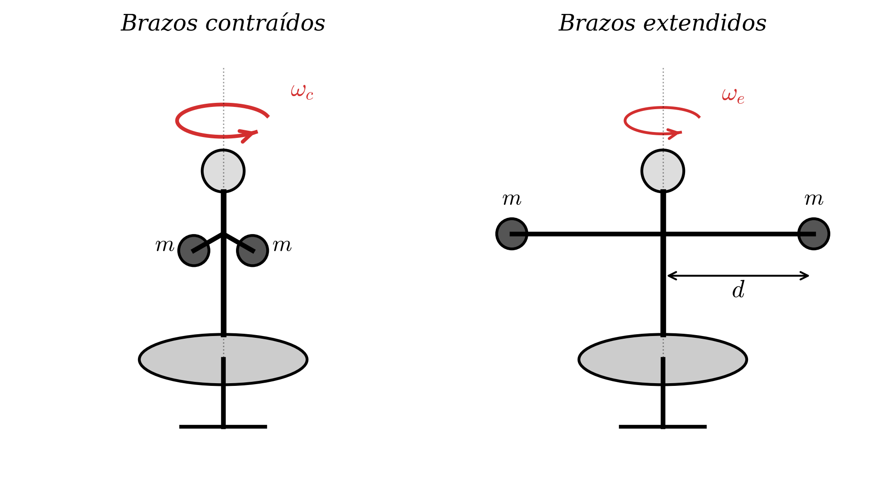
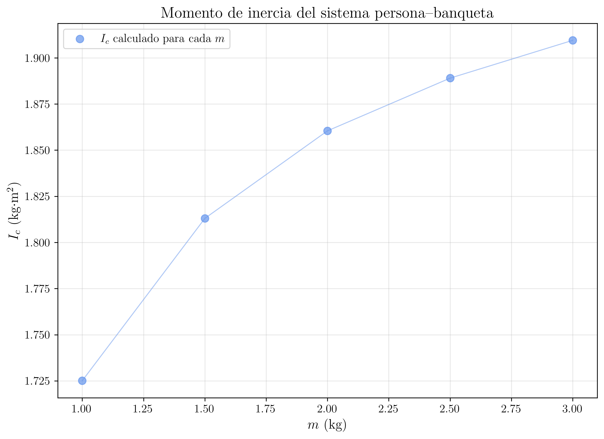

Laboratorio de Mecánica — UNED
2026-03-20
Demostración experimental de la conservación del momento angular mediante una banqueta giratoria con pesas y una rueda de bicicleta. Estudio de la relación inversa entre el momento de inercia y la velocidad angular.
En esta experiencia se investiga experimentalmente el principio de conservación del momento cinético (momento angular). Se verificará que, en ausencia de pares de fuerzas externas, el momento cinético de un sistema se conserva. A partir de las medidas experimentales se determinará el momento de inercia del sistema persona-taburete giratorio.
El momento cinético (o momento angular) de un cuerpo rígido que gira con velocidad angular \omega alrededor de un eje fijo es:
L = I\,\omega \tag{1}
donde I es el momento de inercia del cuerpo respecto al eje de rotación.
El teorema fundamental de la dinámica de rotación establece que la variación temporal del momento cinético es igual al par de fuerzas externas (torque externo) que actúa sobre el sistema:
\vec{\tau}_{\textrm{ext}} = \dfrac{d\vec{L}}{dt} \tag{2}
Por lo tanto, si el par de fuerzas externas neto es nulo (\vec{\tau}_{\textrm{ext}} = 0), el momento cinético se conserva:
\boxed{\dfrac{d\vec{L}}{dt} = 0 \;\Rightarrow\; \vec{L} = \textrm{constante} \;\Rightarrow\; I_{i}\,\omega_{i} = I_{f}\,\omega_{f}} \tag{3}
Este es el principio de conservación del momento cinético: en ausencia de pares de fuerzas externas, el momento cinético total del sistema permanece constante.
Considérese una persona sentada en un taburete giratorio que sostiene una mancuerna en cada mano. Cuando la persona gira con los brazos extendidos, el momento de inercia del sistema es mayor que cuando contrae los brazos hacia el cuerpo. Puesto que el taburete tiene fricción despreciable, no hay par de fuerzas externas apreciable sobre el eje vertical y el momento cinético se conserva.
Se definen dos configuraciones:

El momento de inercia en la configuración extendida se puede expresar como la suma del momento de inercia en la configuración contraída más la contribución de las dos mancuernas, cada una de masa m, a una distancia d del eje de giro:
I_{e} = I_{c} + 2\,m\,d^{2} \tag{4}
Interpretación de la ecuación anterior
En la configuración contraída, las mancuernas están prácticamente sobre el eje de giro, por lo que su contribución al momento de inercia es despreciable y queda absorbida dentro de I_{c}. En la configuración extendida, cada mancuerna se modela como una masa puntual a una distancia d del eje, añadiendo m\,d^{2} cada una.
Aplicando la conservación del momento cinético entre ambas configuraciones:
I_{c}\,\omega_{c} = I_{e}\,\omega_{e} = \left(I_{c} + 2\,m\,d^{2}\right)\,\omega_{e} \tag{5}
Despejando I_{c}:
I_{c}\,\omega_{c} = I_{c}\,\omega_{e} + 2\,m\,d^{2}\,\omega_{e} \;\Rightarrow\; I_{c}\left(\omega_{c} - \omega_{e}\right) = 2\,m\,d^{2}\,\omega_{e}
\boxed{I_{c} = \dfrac{2\,m\,d^{2}\,\omega_{e}}{\omega_{c} - \omega_{e}} = \dfrac{2\,m\,d^{2}}{\dfrac{\omega_{c}}{\omega_{e}} - 1}} \tag{6}
Velocidad angular a partir del periodo
La velocidad angular se obtiene midiendo el tiempo t que tarda el sistema en completar N revoluciones. El periodo es T = t/N y la velocidad angular:
\omega = \dfrac{2\pi}{T} = \dfrac{2\pi\, N}{t} \tag{7}
Con lo que el cociente de velocidades angulares se reduce a un cociente de tiempos:
\dfrac{\omega_{c}}{\omega_{e}} = \dfrac{T_{e}}{T_{c}} = \dfrac{t_{e}}{t_{c}} \tag{8}
donde t_{c} y t_{e} son los tiempos medidos para el mismo número de revoluciones N en las configuraciones contraída y extendida, respectivamente.
Es importante notar que, aunque el momento cinético se conserva, la energía cinética de rotación no se conserva en este proceso. La energía cinética de rotación es:
E_{K} = \dfrac{1}{2}\,I\,\omega^{2} = \dfrac{L^{2}}{2\,I} \tag{9}
Puesto que L es constante, al disminuir I (contraer los brazos), la energía cinética aumenta. La energía adicional proviene del trabajo realizado por los músculos de la persona al acercar las mancuernas al eje de rotación.
\dfrac{E_{K,c}}{E_{K,e}} = \dfrac{I_{e}}{I_{c}} = \dfrac{\omega_{c}}{\omega_{e}} > 1 \tag{10}
Una persona sentada en el taburete giratorio, inicialmente en reposo, sostiene una rueda de bicicleta que gira rápidamente alrededor de su propio eje (vertical). Si invierte la rueda (gira su eje 180°), el momento cinético de la rueda cambia de signo. Para conservar el momento cinético total del sistema (persona + taburete + rueda), la persona y el taburete comienzan a girar en el sentido en el que giraba originalmente la rueda.
Si L_{\textrm{rueda}} es el momento cinético inicial de la rueda:
L_{\textrm{total}} = L_{\textrm{rueda}} + L_{\textrm{persona}} = L_{\textrm{rueda}} + 0 = L_{\textrm{rueda}}
Tras la inversión:
L_{\textrm{total}} = -L_{\textrm{rueda}} + L_{\textrm{persona}}' = L_{\textrm{rueda}} \;\Rightarrow\; L_{\textrm{persona}}' = 2\,L_{\textrm{rueda}} \tag{11}
1
Medir con la cinta métrica la distancia d desde el eje del taburete hasta el centro de las mancuernas cuando la persona tiene los brazos completamente extendidos. Anotar también la masa m de cada mancuerna.
2
Una persona se sienta en el taburete giratorio y sostiene una mancuerna en cada mano. Un compañero le da un impulso inicial de rotación.
Notas:
- El impulso inicial debe ser suave para evitar velocidades excesivas que dificulten la medida.
- El taburete debe estar nivelado y su eje bien lubricado para minimizar la fricción.
- La persona debe mantener los pies levantados del suelo durante toda la medida.
3
Con los brazos contraídos (mancuernas pegadas al pecho), medir el tiempo t_{c} que tarda en completar N = 5 revoluciones completas. Repetir la medida al menos 3 veces.
Datos
experimentales
A continuación se presenta una tabla con los datos sintéticos recogidos en el laboratorio para la configuración contraída (N = 5 revoluciones, m = 2{,}0 kg, d = 0{,}80 m):
| Medida | t_{c}\textrm{ (s)} |
|---|---|
| 1 | 8.42 |
| 2 | 8.35 |
| 3 | 8.51 |
| 4 | 8.38 |
| 5 | 8.44 |
Valor medio: \bar{t}_{c} = 8{,}42 s \;\Rightarrow\; T_{c} = \dfrac{8{,}42}{5} = 1{,}684 s \;\Rightarrow\; \omega_{c} = \dfrac{2\pi}{1{,}684} = 3{,}731 rad/s.
4
Sin detenerse, la persona extiende los brazos completamente (mancuernas a la distancia d del eje) y se mide el tiempo t_{e} que tarda en completar N = 5 revoluciones. Repetir la medida al menos 3 veces.
Datos
experimentales
Datos sintéticos para la configuración extendida:
| Medida | t_{e}\textrm{ (s)} |
|---|---|
| 1 | 19.87 |
| 2 | 20.15 |
| 3 | 20.03 |
| 4 | 19.92 |
| 5 | 20.08 |
Valor medio: \bar{t}_{e} = 20{,}01 s \;\Rightarrow\; T_{e} = \dfrac{20{,}01}{5} = 4{,}002 s \;\Rightarrow\; \omega_{e} = \dfrac{2\pi}{4{,}002} = 1{,}570 rad/s.
5
Calcular el momento de inercia del sistema persona-taburete en la configuración contraída, I_{c}, utilizando la expresión Ecuación 6.
Cálculo de I_{c}
Con los datos sintéticos obtenidos:
- m = 2{,}0 kg
- d = 0{,}80 m
- \bar{t}_{c} = 8{,}42 s \;\Rightarrow\; \omega_{c} = 2\pi\cdot 5 / 8{,}42 = 3{,}731 rad/s
- \bar{t}_{e} = 20{,}01 s \;\Rightarrow\; \omega_{e} = 2\pi\cdot 5 / 20{,}01 = 1{,}570 rad/s
Utilizando directamente los tiempos (ecuación Ecuación 8), el cociente de velocidades angulares es:
R = \dfrac{\omega_{c}}{\omega_{e}} = \dfrac{t_{e}}{t_{c}} = \dfrac{20{,}01}{8{,}42} = 2{,}3765
Aplicando la ecuación Ecuación 6:
I_{c} = \dfrac{2\,m\,d^{2}}{R - 1} = \dfrac{2 \times 2{,}0 \times (0{,}80)^{2}}{2{,}3765 - 1} = \dfrac{2{,}56}{1{,}3765} \approx 1{,}860 \textrm{ kg}\cdot\textrm{m}^{2}
Propagación de errores de I_{c}
El momento de inercia I_{c} depende de tres variables: m, d y R = t_{e}/t_{c}:
I_{c} = \dfrac{2\,m\,d^{2}}{R - 1}
El error se calcula mediante propagación de errores:
\Delta I_{c} = \sqrt{ \left(\dfrac{\partial I_{c}}{\partial m}\right)^{2}(\Delta m)^{2} + \left(\dfrac{\partial I_{c}}{\partial d}\right)^{2}(\Delta d)^{2} + \left(\dfrac{\partial I_{c}}{\partial R}\right)^{2}(\Delta R)^{2} }
Derivadas parciales:
\dfrac{\partial I_{c}}{\partial m} = \dfrac{2\,d^{2}}{R - 1} = \dfrac{2 \times 0{,}64}{1{,}3765} = 0{,}930 \textrm{ m}^{2}
\dfrac{\partial I_{c}}{\partial d} = \dfrac{4\,m\,d}{R - 1} = \dfrac{4 \times 2{,}0 \times 0{,}80}{1{,}3765} = 4{,}650 \textrm{ kg}\cdot\textrm{m}
\dfrac{\partial I_{c}}{\partial R} = \dfrac{-2\,m\,d^{2}}{(R - 1)^{2}} = \dfrac{-2{,}56}{(1{,}3765)^{2}} = -1{,}351 \textrm{ kg}\cdot\textrm{m}^{2}
Errores de las variables:
- \Delta m = 0{,}01 kg (precisión de la balanza)
- \Delta d = 0{,}001 m (precisión de la cinta métrica)
- \Delta R: puesto que R = t_{e}/t_{c}, su error relativo es:
\dfrac{\Delta R}{R} = \sqrt{\left(\dfrac{\Delta t_{c}}{t_{c}}\right)^{2} + \left(\dfrac{\Delta t_{e}}{t_{e}}\right)^{2}}
donde \Delta t_{c} y \Delta t_{e} son los errores cuadráticos medios de las medidas de tiempo. A partir de las desviaciones típicas de las 5 medidas:
s_{t_{c}} = 0{,}061 \textrm{ s} \;\Rightarrow\; \Delta t_{c} = \dfrac{s_{t_{c}}}{\sqrt{5}} = 0{,}027 \textrm{ s}
s_{t_{e}} = 0{,}115 \textrm{ s} \;\Rightarrow\; \Delta t_{e} = \dfrac{s_{t_{e}}}{\sqrt{5}} = 0{,}051 \textrm{ s}
\dfrac{\Delta R}{R} = \sqrt{\left(\dfrac{0{,}027}{8{,}42}\right)^{2} + \left(\dfrac{0{,}051}{20{,}01}\right)^{2}} = \sqrt{(0{,}00325)^{2} + (0{,}00256)^{2}} = 0{,}00414
\Delta R = 2{,}3765 \times 0{,}00414 = 0{,}0098
Resultado:
\Delta I_{c} = \sqrt{ (0{,}930)^{2}\cdot(0{,}01)^{2} + (4{,}650)^{2}\cdot(0{,}001)^{2} + (-1{,}351)^{2}\cdot(0{,}0098)^{2} }
\Delta I_{c} = \sqrt{ 0{,}0000865 + 0{,}0000216 + 0{,}000175 } = \sqrt{0{,}000283} = 0{,}017 \textrm{ kg}\cdot\textrm{m}^{2}
\boxed{I_{c} = 1{,}86 \pm 0{,}02 \textrm{ kg}\cdot\textrm{m}^{2}}
La fuente dominante de error es la incertidumbre en el cociente de tiempos R, que contribuye un 62\% de la varianza total.
6
Verificar la conservación del momento cinético. Calcular L_{c} = I_{c}\,\omega_{c} y L_{e} = I_{e}\,\omega_{e} y comprobar que son iguales (dentro de los errores experimentales).
Verificación de la conservación
I_{e} = I_{c} + 2\,m\,d^{2} = 1{,}86 + 2 \times 2{,}0 \times 0{,}64 = 1{,}86 + 2{,}56 = 4{,}42 \textrm{ kg}\cdot\textrm{m}^{2}
L_{c} = I_{c}\,\omega_{c} = 1{,}86 \times 3{,}731 = 6{,}94 \textrm{ kg}\cdot\textrm{m}^{2}/\textrm{s}
L_{e} = I_{e}\,\omega_{e} = 4{,}42 \times 1{,}570 = 6{,}94 \textrm{ kg}\cdot\textrm{m}^{2}/\textrm{s}
\boxed{L_{c} \approx L_{e} \approx 6{,}94 \textrm{ kg}\cdot\textrm{m}^{2}/\textrm{s}}
El momento cinético se conserva dentro de la precisión experimental, como predice la teoría.
7
Calcular la energía cinética de rotación en ambas configuraciones y verificar que no se conserva.
No conservación de la energía cinética
Utilizando los valores obtenidos (I_{c} = 1{,}86 kg\cdotm^{2}, I_{e} = 4{,}42 kg\cdotm^{2}, \omega_{c} = 3{,}731 rad/s, \omega_{e} = 1{,}570 rad/s):
Configuración contraída:
E_{K,c} = \dfrac{1}{2}\,I_{c}\,\omega_{c}^{2} = \dfrac{1}{2} \times 1{,}86 \times (3{,}731)^{2} = \dfrac{1}{2} \times 1{,}86 \times 13{,}92 = 12{,}95 \textrm{ J}
Configuración extendida:
E_{K,e} = \dfrac{1}{2}\,I_{e}\,\omega_{e}^{2} = \dfrac{1}{2} \times 4{,}42 \times (1{,}570)^{2} = \dfrac{1}{2} \times 4{,}42 \times 2{,}465 = 5{,}45 \textrm{ J}
Cociente de energías:
\dfrac{E_{K,c}}{E_{K,e}} = \dfrac{12{,}95}{5{,}45} \approx 2{,}38 = \dfrac{\omega_{c}}{\omega_{e}} = \dfrac{I_{e}}{I_{c}}
como predice la ecuación Ecuación 10 (puesto que L se conserva, E_{K} = L^{2}/(2I), y por tanto E_{K,c}/E_{K,e} = I_{e}/I_{c}).
Trabajo realizado por los músculos:
\boxed{\Delta E = E_{K,c} - E_{K,e} = 12{,}95 - 5{,}45 = 7{,}50 \textrm{ J}}
La energía cinética en la configuración contraída es un factor \omega_{c}/\omega_{e} \approx 2{,}4 veces mayor que en la configuración extendida. La diferencia de 7{,}50 J proviene del trabajo realizado por los músculos de la persona al contraer los brazos contra la fuerza centrífuga.
8
Repetir las medidas de los pasos 3 y 4 utilizando mancuernas de diferente masa para obtener varios valores de I_{c} y verificar la consistencia del resultado.

Datos
experimentales
Tabla resumen con datos sintéticos para diferentes masas de mancuernas (N = 5 revoluciones, d = 0{,}80 m):
| m\textrm{ (kg)} | \bar{t}_{c}\textrm{ (s)} | \bar{t}_{e}\textrm{ (s)} | R = t_{e}/t_{c} | R - 1 | 2md^{2}\textrm{ (kg}\cdot\textrm{m}^{2}\textrm{)} | I_{c}\textrm{ (kg}\cdot\textrm{m}^{2}\textrm{)} |
|---|---|---|---|---|---|---|
| 1.0 | 8.40 | 13.82 | 1.6452 | 0.6452 | 1.28 | 1.98 |
| 1.5 | 8.41 | 16.55 | 1.9679 | 0.9679 | 1.92 | 1.98 |
| 2.0 | 8.42 | 20.01 | 2.3765 | 1.3765 | 2.56 | 1.86 |
| 2.5 | 8.43 | 23.60 | 2.7995 | 1.7995 | 3.20 | 1.78 |
| 3.0 | 8.44 | 27.42 | 3.2488 | 2.2488 | 3.84 | 1.71 |
Para cada masa se aplica I_{c} = 2\,m\,d^{2}/(R - 1). Por ejemplo, para m = 1{,}0 kg:
I_{c} = \dfrac{2 \times 1{,}0 \times 0{,}64}{1{,}6452 - 1} = \dfrac{1{,}28}{0{,}6452} = 1{,}98 \textrm{ kg}\cdot\textrm{m}^{2}
El valor medio y la desviación típica de los 5 valores de I_{c} son:
\bar{I}_{c} = \dfrac{1{,}98 + 1{,}98 + 1{,}86 + 1{,}78 + 1{,}71}{5} = 1{,}86 \textrm{ kg}\cdot\textrm{m}^{2}
s_{I_{c}} = \sqrt{\dfrac{\sum_{i}(I_{c,i} - \bar{I}_{c})^{2}}{N-1}} = 0{,}12 \textrm{ kg}\cdot\textrm{m}^{2}
\boxed{\bar{I}_{c} = 1{,}86 \pm 0{,}12 \textrm{ kg}\cdot\textrm{m}^{2}}
Los valores de I_{c} obtenidos con diferentes masas son consistentes entre sí (la dispersión es del orden del 6{,}5\% del valor medio), lo que confirma la validez del método y del principio de conservación del momento cinético. La ligera tendencia decreciente de I_{c} con m podría deberse a que, con mancuernas más pesadas, la persona contrae los brazos algo más.
9
Una persona se sienta en el taburete giratorio, inicialmente en reposo, y sostiene verticalmente la rueda de bicicleta, que ha sido puesta a girar rápidamente por un compañero.
Notas:
- Esta es una experiencia cualitativa. No es necesario tomar medidas cuantitativas.
- Asegurarse de que la rueda gira a suficiente velocidad para que el efecto sea claramente visible.
Observaciones esperadas
- Cuando la rueda gira en sentido antihorario (vista desde arriba) y se invierte, la persona comienza a girar en sentido antihorario (el mismo sentido original de la rueda).
- Al invertir nuevamente la rueda, la persona se detiene (o casi se detiene).
- Este efecto se explica por la conservación del momento cinético total del sistema (ecuación Ecuación 11): al invertir la rueda, su momento cinético cambia de +L_{\textrm{rueda}} a -L_{\textrm{rueda}}, y la persona debe adquirir un momento cinético +2L_{\textrm{rueda}} para compensar.
Ejercicios Previos
Enunciar el teorema de conservación del momento cinético. ¿Cuál es la condición necesaria para que se cumpla?
Un patinador sobre hielo gira con los brazos extendidos a una velocidad angular \omega_{1} = 2{,}0 rad/s. Su momento de inercia en esa configuración es I_{1} = 4{,}0 kg\cdotm^{2}. Si contrae los brazos y su momento de inercia pasa a ser I_{2} = 1{,}5 kg\cdotm^{2}, calcular:
- su nueva velocidad angular \omega_{2},
- la energía cinética de rotación antes y después de contraer los brazos,
- explicar de dónde proviene la diferencia de energía.
A partir de la ecuación Ecuación 5, deducir la expresión Ecuación 6 para I_{c}.
Explicar por qué la energía cinética de rotación no se conserva en la experiencia del taburete con mancuernas, a pesar de que el momento cinético sí se conserva.
En la experiencia de la rueda de bicicleta, si el momento cinético inicial de la rueda es L_{\textrm{rueda}} = 5{,}0 kg\cdotm^{2}/s y el momento de inercia de la persona + taburete es I_{\textrm{p}} = 2{,}0 kg\cdotm^{2}, ¿a qué velocidad angular girará la persona tras invertir la rueda?
Ejercicios Posteriores
Con los datos experimentales obtenidos en la experiencia A, calcular el error de I_{c} por propagación de errores a partir de la ecuación Ecuación 6.
Indicación:I_{c} es una función de tres variables: I_{c} = I_{c}(m, d, r), siendo r = t_{e}/t_{c} el cociente de tiempos. El error se calcula como:\Delta I_{c} = \sqrt{ \left(\dfrac{\partial I_{c}}{\partial m}\right)^{2}(\Delta m)^{2} + \left(\dfrac{\partial I_{c}}{\partial d}\right)^{2}(\Delta d)^{2} + \left(\dfrac{\partial I_{c}}{\partial r}\right)^{2}(\Delta r)^{2} }
¿Cuál es la principal fuente de error en este experimento? Discutir la influencia de: la fricción del taburete, la precisión en la medida de d, la no simultaneidad entre la extensión de los brazos y el inicio del conteo.
Si la persona, además de extender los brazos, extiende las piernas, ¿qué efecto tiene sobre I_{c} medido? ¿Sigue siendo válida la ecuación Ecuación 4?
Explicar la analogía entre esta experiencia y la pirueta de un patinador artístico sobre hielo. ¿Qué cambia y qué se conserva en ambos casos?
Un satélite en órbita lleva una rueda de reacción. Explicar, en términos de la conservación del momento cinético, cómo puede el satélite cambiar su orientación sin utilizar propulsores.
Universidad de Valencia - Guía de demostraciones de mecánica: conservación del momento angular con taburete giratorio.
Universidad Complutense de Madrid (UCM) - Prácticas de Física General: momento cinético y rotaciones.
Universidad Tecnológica de la Mixteca (UTM), México - Laboratorio de Mecánica: conservación del momento angular.
OpenStax University Physics, Vol. 1, Sección 11.3: Conservation of Angular Momentum. https://openstax.org/books/university-physics-volume-1/pages/11-3-conservation-of-angular-momentum
Serway, R.A. y Jewett, J.W., Física para ciencias e ingeniería, 10.ª ed., Cengage Learning, Capítulo 11.
Tipler, P.A. y Mosca, G., Física para la ciencia y la tecnología, 6.ª ed., Reverté, Capítulo 10.